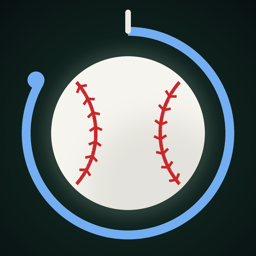

On Time
Baseball Eye Trainer
On Time trains a hitter's timing and swing decisions against real big-league pitch flight, from the batter's box.
Get help
Questions, bugs or ideas: open an issue. Please include your iPhone model and iOS version.
Common questions
Why run Bat Check? Every phone has a small touch delay. Bat Check measures yours in about a minute and removes it from every rep.
What does Pro do? Pro removes all ads. It renews monthly until you cancel in Settings › Apple ID › Subscriptions.
Restoring a purchase: Setup › Go Pro › Restore purchase.
Where is my data? On your phone only. See the privacy policy.